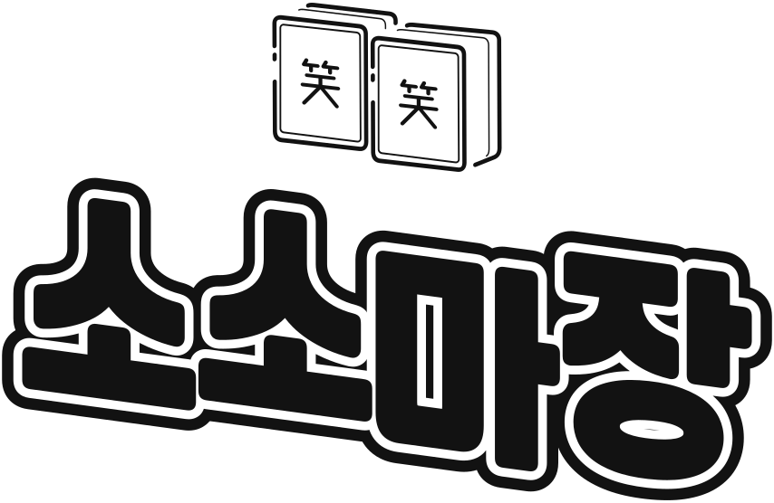
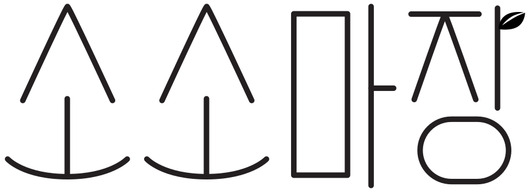
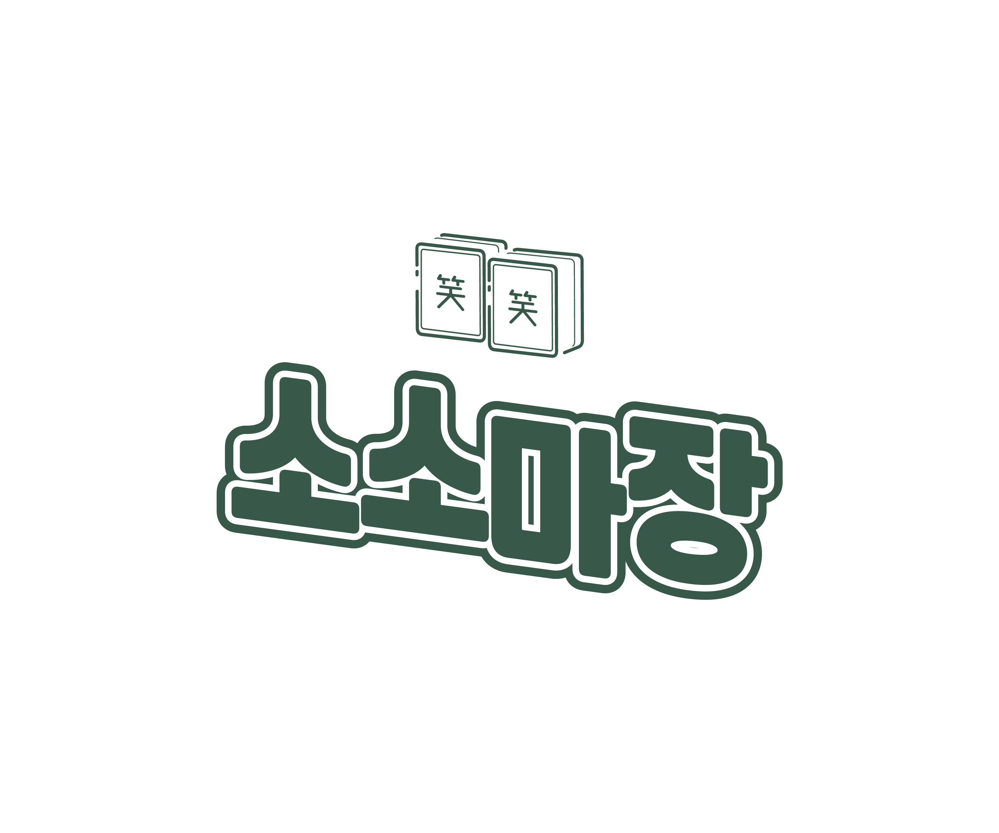
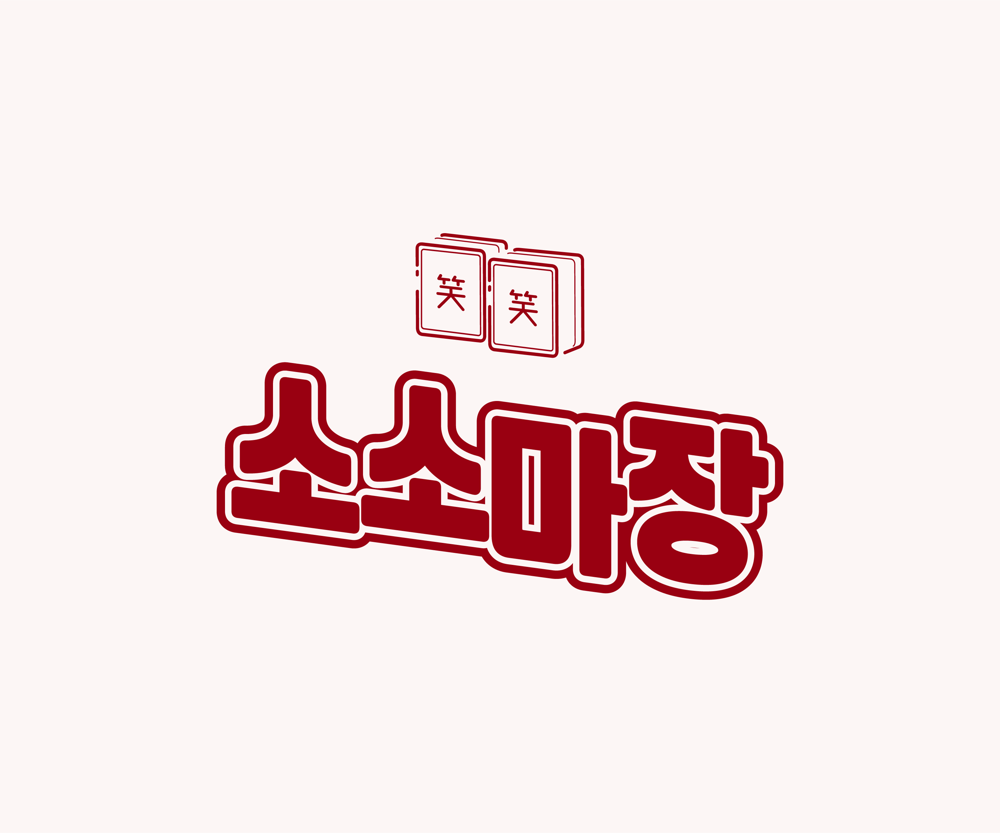
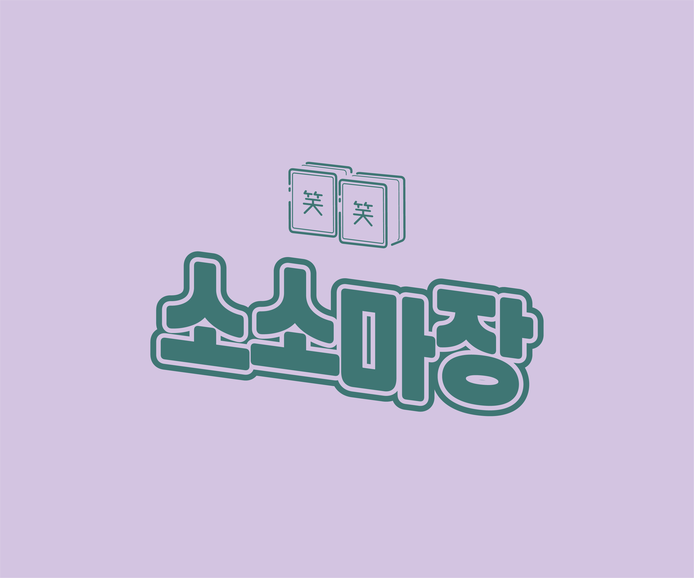
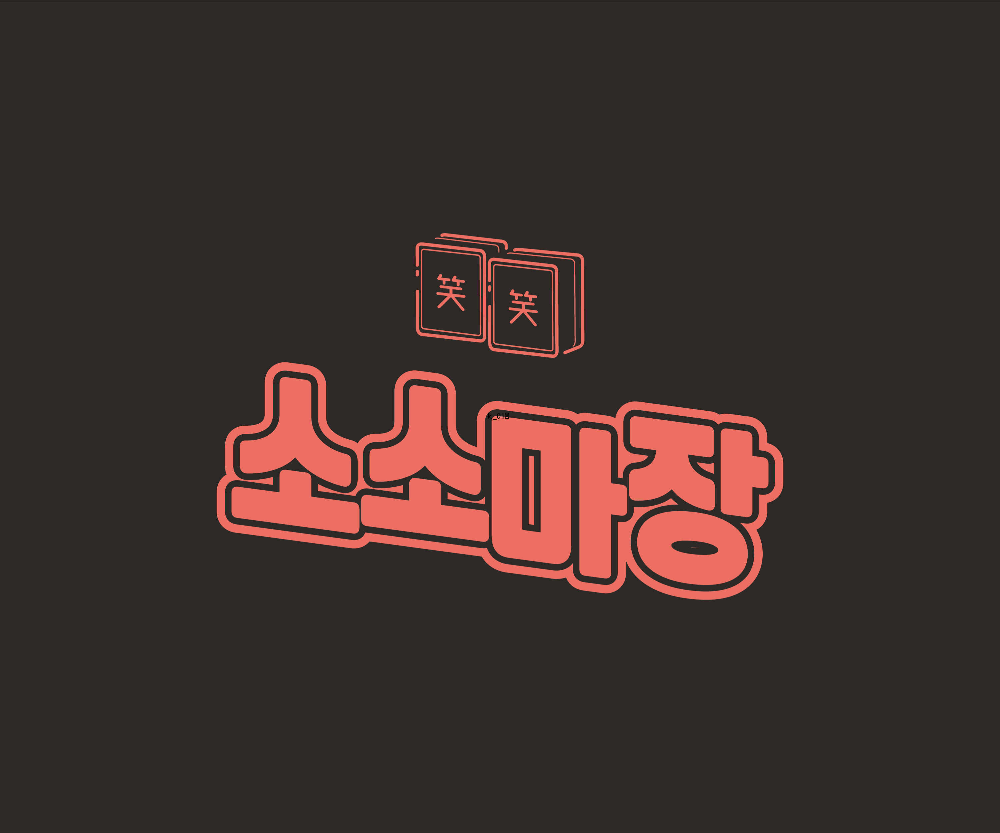
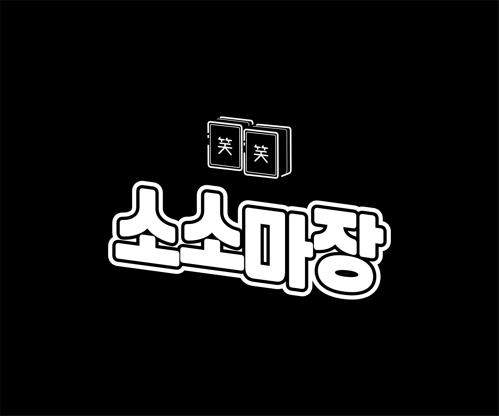
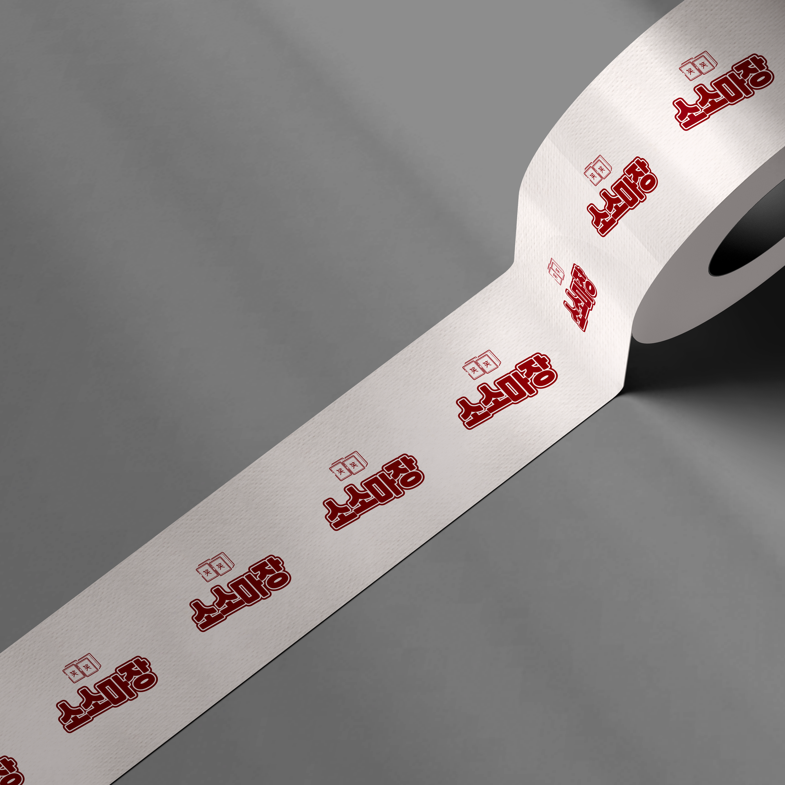
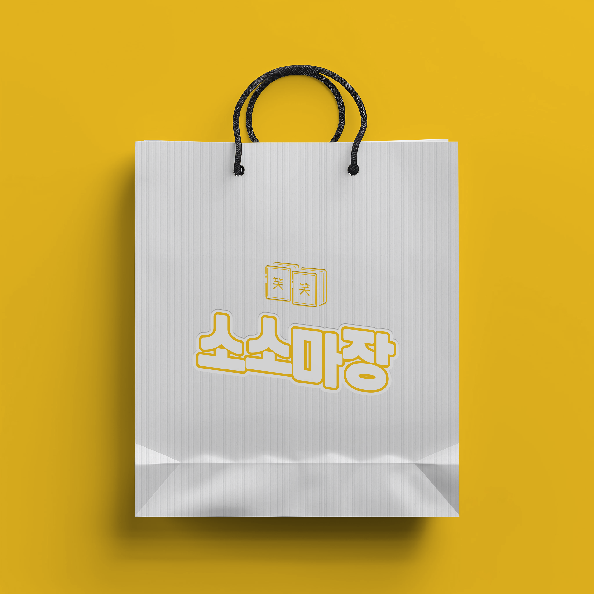

TITLE
SOSO-
SOSO-
MAJANG
- YEAR
- 10 2024
- DURATION
-
- 3 days of production
- 2 weeks of review
- FIELDS
-
- Illust
- Branding
- Logo Design
- HOW I WORKED ON IT
-
소소마장의 브랜딩 로고 디자인을 진행했습니다. 소소마장은 다양한 사람들이 모여 마작을 즐기는 오프라인 보드게임 카페로, 마작 특유의 진중하고 집중된 분위기와 게임이 주는 즐거움과 유쾌함을 시각적으로 담아내는 데 중점을 두었습니다.
#OVERVIEW
마작패를 활용한 그래픽 요소에 웃음 소자를 담아내어 게임의 전략적 긴장감을 유지하면서도
누구나 쉽게 다가갈 수 있는 느낌을 표현하여
마작의 몰입감과 브랜드의 소소함을 균형있게 담아내었습니다.

#BI_CONCEPT
이야기를 나누며 생각한 전략을 기반으로 BI 컨셉을 다양하게 제안하였습니다.
제안을 통해 소소마장이 주는 새로운 아이덴티티를 만들어가고자 했습니다.
‘소소마장’은 마작장을 만들 당시에 “웃을 소(笑)”자를 사용하여 웃음이 가득하다를 뜻함과 동시에 저희 마작장만이 주는 소소함도 있다는 뜻을 전달하고 싶어서 탄생한 이름이에요.
리디자인 된 로고는 어느 곳에 사용될까요? 기존의 나무 위에 그려진 투박한 느낌을 유지하나요?
기존의 간판이라는 느낌만 주는 디자인에서 상품에 라벨 스티커나 온라인스토어에 사용될 수도 있고 소소마장만의 아이덴티티를 줄 수 있는 브랜드로서의 느낌으로 리디자인 되었으면 해요.
#SYMBOL_MOTIF
끝이 둥근 마작패에 한자나 기호를 제거하고 한자 '웃을 소'를 담아 형상화 한 그래픽으로
즐거운 웃음을 주는 마작장임을 심볼화한 로고입니다.
전체적인 곡선의 디자인으로 부드러운 느낌 또한 전달합니다.

typo
#BRAND_LOGO








상황과 용도에 따라 조화롭게 표기될 수 있도록 색상에 제한을 두지 않고,
어떤 배경색과 어떤 색으로 조합되더라도 부드럽고 통통 튀는 느낌이 들 수 있도록 작업했습니다.